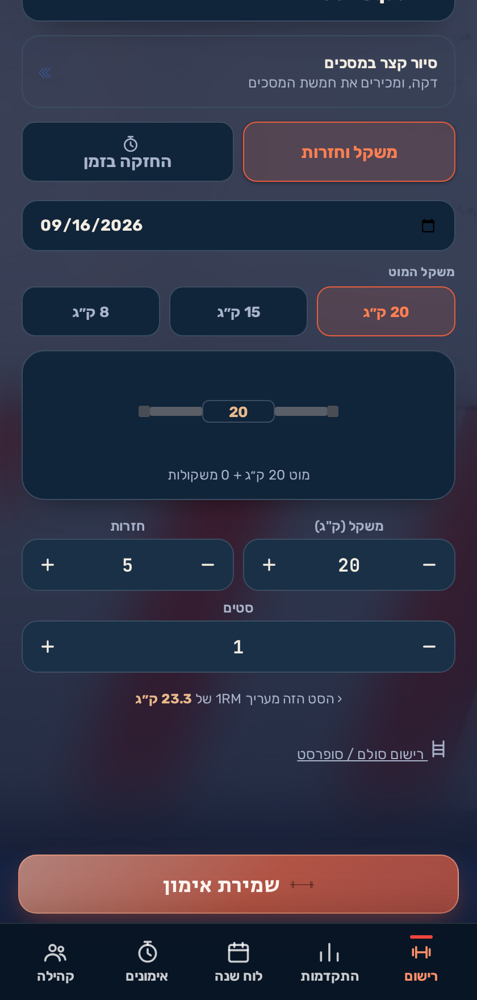
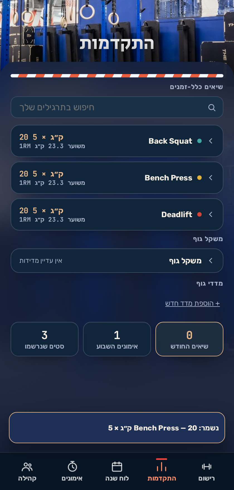
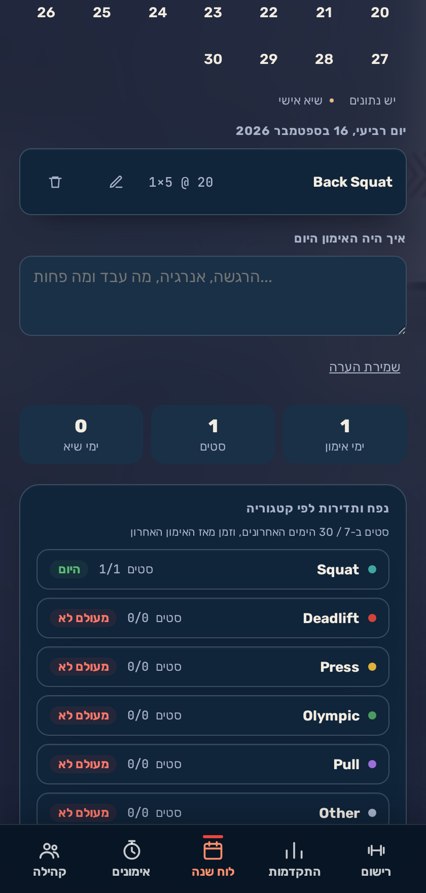
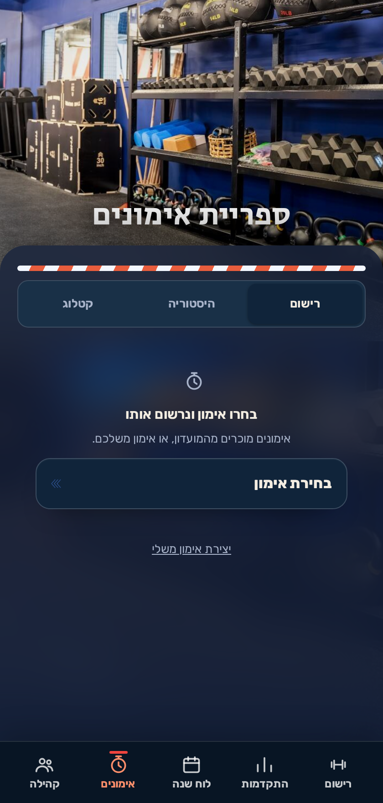
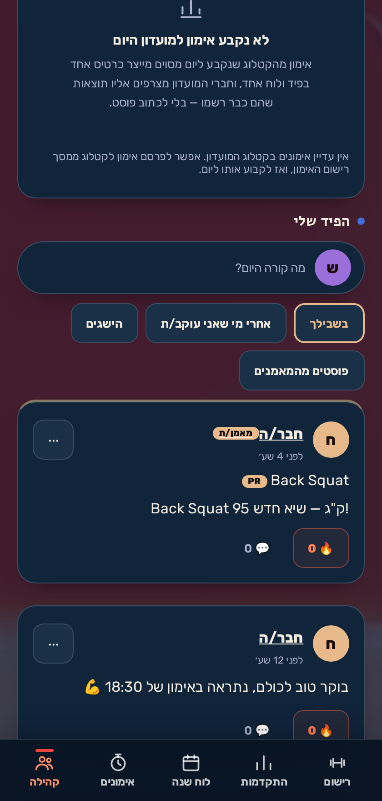
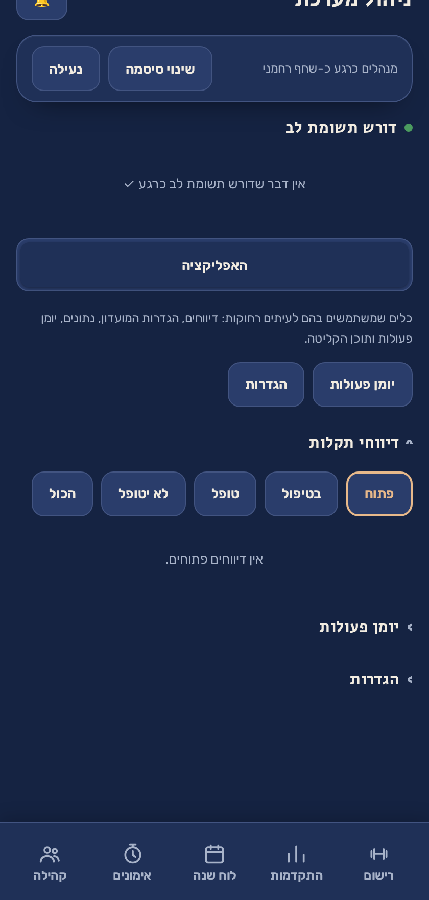
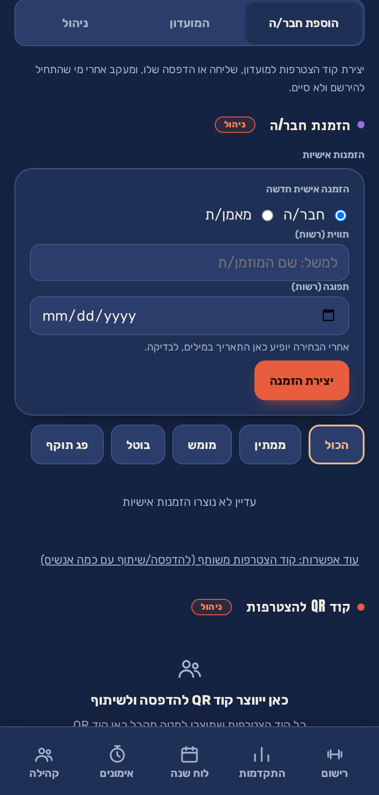

אפליקציה שחברי המועדון פותחים אחרי האימון — כדי לרשום מה עשו, לראות התקדמות לאורך זמן, ולראות מה קורה במועדון. היא לא מחליפה את Arbox ולא נוגעת בהרשמה לשיעורים.
שני חצאים, והם נפרדים בכוונה:
אפשר להשתמש רק ביומן האישי בלי להצטרף לקהילה בכלל. מי שלא רוצה לשתף — פשוט לא מצטרף, והאפליקציה עדיין שימושית לו לגמרי.
בתחתית המסך יש חמש לשוניות. זה כל מה שחבר מועדון רגיל צריך להכיר.
המסך המרכזי. בוחרים תרגיל, מזינים משקל וחזרות, ושומרים. האפליקציה מזהה לבד שיא אישי חדש ומציינת אותו.
יש גם רישום של אימון מלא (WOD) — לזמן, לסבבים או למשקל — עם סימון Rx או מותאם.


גרפים לאורך זמן לכל תרגיל, שיאים אישיים, ומשקל גוף ומדידות למי שרוצה לעקוב. כאן החבר רואה שהעבודה שלו מצטברת למשהו.
שנה שלמה במבט אחד — כל יום שהתאמנו בו מסומן. לחיצה על יום פותחת בדיוק מה נרשם בו.
זה המסך שהכי מהר מראה לחבר/ה אם ההתמדה נשמרת, בלי לקרוא מספר אחד.

קטלוג האימונים: אימוני בנצ'מרק מוכרים (Murph, Fran וכאלה), ואימונים שהמועדון בנה בעצמו. מכאן גם נקבע אימון היום של המועדון — וכל מי שרשם אותו יכול לצרף את התוצאה שלו ללוח משותף בלחיצה אחת.

הפיד של המועדון: שיאים של חברים, פוסטים, הודעות מהמאמנים. אפשר להגיב, לסמן 🔥, ולעקוב אחרי חברים.
בתוך הקהילה יש ארבע לשוניות:

הקהילה סגורה. אי אפשר להירשם אליה מהרחוב — צריך קוד הזמנה שאתה או המאמנים מייצרים.
לניהול יש חשבון נפרד משלו, עם שם משתמש וסיסמה משלו. זה מכוון: אתה גם מתאמן, והחשבון האישי שלך צריך להישאר חשבון של מתאמן. כניסה לניהול לא מנתקת אותך מהחשבון האישי.
בתפריט יש שתי כניסות:

הצד האנושי — מי במועדון ומה קורה בו:
הצד הטכני — איך האפליקציה מתנהגת:
ארבע דרגות. כל דרגה כוללת את מה שמתחתיה, והחלוקה נאכפת בשרת — לא רק מוסתרת במסך.
| יכולת | מאמן/ת | מאמן/ת ראשי/ת | מנהל/ת |
|---|---|---|---|
| פרסום הודעות למועדון | ✓ | ✓ | ✓ |
| פתיחת אתגרים ואירועים | ✓ | ✓ | ✓ |
| הזמנת חברים חדשים | ✓ | ✓ | ✓ |
| מודרציה של תגובות | ✓ | ✓ | ✓ |
| לוח המאמנים | ✓ | ✓ | ✓ |
| הצמדת תוכן לראש הפיד | — | ✓ | ✓ |
| מחיקת תוכן של אחרים | — | ✓ | ✓ |
| הגבלת חבר/ה | — | ✓ | ✓ |
| ניהול קודי הזמנה | — | ✓ | ✓ |
| נתוני שימוש | — | ✓ | ✓ |
| כיבוי והדלקה של יכולות | — | — | ✓ |

הכלי היומיומי של המאמן. שלושה חלקים:
היומן האישי עובד רגיל — הוא שמור במכשיר. הרישומים מסתנכרנים לבד כשהחיבור חוזר. הקהילה, מטבע הדברים, צריכה חיבור.
אף אחד, אלא אם בחרת לשתף. גם מאמן וגם מנהל רואים רק ספירות (כמה אימונים החודש), לא את הרישומים עצמם.
כן. פותחים את האתר בדפדפן ובוחרים "הוספה למסך הבית". מאותו רגע זה נראה ומתנהג כמו אפליקציה רגילה, כולל עבודה בלי רשת.
מבטלים לו את הגישה לקהילה מתוך ניהול המועדון. היומן האישי שלו נשאר שלו, במכשיר שלו — הוא לא נמחק.
בתוך האפליקציה יש דיווח תקלה. הדיווחים מגיעים לתיבה בניהול המערכת, ומגיעה עליהם התראה.